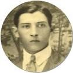
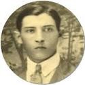

Era una persona noble y dicharachera.
Refranera, de gran humor y con bastantes anécdotas que contar, muchos disfrutaban de su gracia al hacerlo.
Amaba la poesía (amor que heredaron Odila, Aura y Avilio), resolver crucigramas
y era muy aficionada a los juegos con la baraja española.
También era devota de las almas del purgatorio y prefería celebrar su santo
(22 de mayo: Santa Rita de Casia) que su cumpleaños.
El 22 de enero de 1979, cruzó el tunel para reencontrarse con su siempre amado Tono.
 


 Tulio Manuel Chirivella Varela †
Tulio Manuel Chirivella Varela †